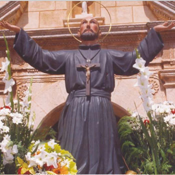

Isusovački blaženici
Svećenik · Misionar · Mučenik
Bl. Alfonz Pacheco
1549. – 1583.
Španjolski isusovac dugo je priželjkivao daleke misije. U Goi je služio zajednici i misijskom djelu, a život završio uz drugove u Cuncolimu.
Tekst je preveden i prilagođen uz pomoć umjetne inteligencije.

Izvor slike
- Spomendan
- 25. srpnja
- Zaštitništvo
- Nije navedeno u izvoru
- Životni vijek
- 1549. – 1583.
- Podrijetlo
- Kastilja, Španjolska
- Ulazak u Družbu Isusovu
- 1567.
- Datum smrti
- 25. srpnja 1583.
- Napomena o godini smrti
- Pojedinačni životopis navodi 1593.; zajednički životopis Rodolfa Acquavive potvrđuje 1583.
U kalendaru zbirke koristi se dan smrti. Taj datum nije zasebna potvrda liturgijskoga spomendana.
Životopis
Alfonz Pacheco rođen je u kastiljskoj obitelji te je 1567. stupio u Družbu Isusovu. Želio je biti misionar na Dalekom istoku. Prilika mu se otvorila kada je zbog bolesti drugoga isusovca određen za put u Gou. Ondje je stigao u rujnu 1574. i služio kao pomoćnik rektora kolegija, zatim provincijala.
Jednom se vratio u Europu kako bi pridobio nove suradnike za misije. Nakon povratka preuzeo je vodstvo misije u Salsetteu. Nedugo prije smrti naslijedio ga je otac Rodolfo Acquaviva, koji je predvodio isusovce na njihovu putu u Cuncolim. Pachecov životopis povezuje njegovo mučeništvo s tom misionarskom skupinom.
Tekst je preveden i prilagođen uz pomoć umjetne inteligencije.